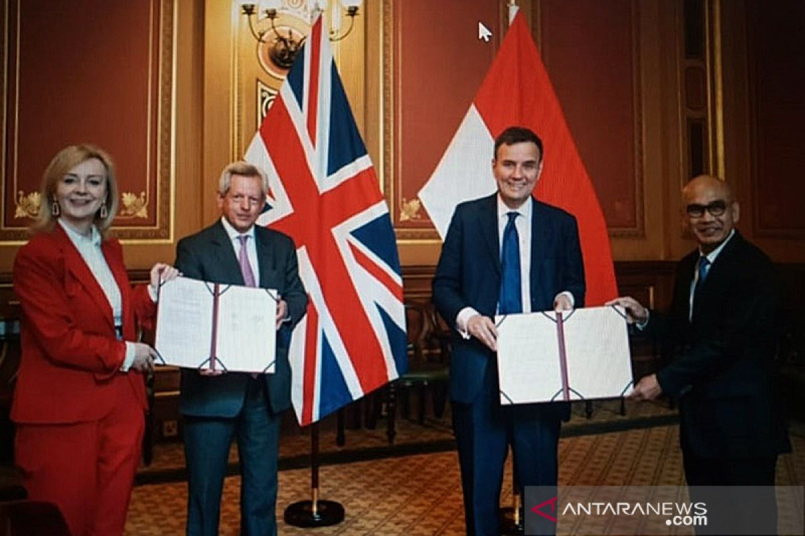
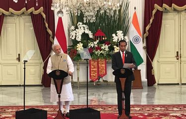

.png)





Hubungan kerjasama antara dua negara yang disepakati secara formal untuk mencapai tujuan tertentu dalam bidang ekonomi, politik, budaya, atau pertahanan. Biasanya kerjasama ini tertuang dalam perjanjian bilateral atau nota kesepahaman (MoU). Bilateral hanya meliputi dua negara saja dan tetap mengutamakan prinsip negara masing - masing. Contoh konkret : Kerjasama Indonesia dan Jepang dalam bidang pembangunan infrastruktur juga ada kerjasama di kereta whoosh.
Banyak sekali manfaat yang ada dalam menjalin kerjasama Bilateral seperti dalam bidang Ekonomi pastinya membuka kesempatan untuk lebih banyak investor asing, lapangan kerja bertambah, dan bisa meningkatkan pendapatan/ekonomi negara. Di bidang Pendidikan dan Pertukaran budaya pastinya bisa meningkatkan pemahaman lintas budaya melalui pertukaran budaya. Bidang pendidikan juga pastinya memberikan pendidikan yang bermutu tinggi dan lebih berkualitas baik secara teknologi, dan lain - lain. Di bidang Politik dan Keamanan bisa memperkuat hubungan diplomatik dan menciptakan stabilitas politik. Kerjasama UK dengan Indonesia perkembangannya semakin pesat dan inilah contoh-contohnya:
1. Ekonomi dan Perdagangan Indonesia dan UK memiliki hubungan ekonomi dan perdagangan yang cukup kuat. UK merupakan salah satu mitra perdagangan utama Indonesia di Eropa dan kedua negara tersebut juga bekerja sama dalam memfasilitasi peningkatan perdagangan barang dan jasa. UK juga sebagai salah satu investor yang berperan besar di Indonesia terutama dalam bidang energi, keuangan, dan infrastruktur. Salah Satu contohnya :
Comprehensive Economic Partnership Agreement (CEPA): Untuk memperkuat hubungan ekonomi, Indonesia dan Inggris telah melakukan perundingan untuk mencapai kesepakatan perdagangan bebas melalui CEPA, yang bertujuan untuk meningkatkan perdagangan dan investasi antara kedua negara.
2. Pendidikan dan Pertukaran Budaya Indonesia dan UK memiliki banyak program pertukaran budaya maupun pendidikan yang melibatkan seni, sastra, dan musik. Seperti dalam festival budaya, pameran seni, dan lain - lain yang dapat mengedepankan pemahaman antarbudaya. Contohnya :
Beasiswa Chevening : UK menawarkan kepada mahasiswa Indonesia untuk melanjutkan studi di UK lewat program beasiswa Chevening. Hal ini pastinya memberikan mahasiswa - mahasiswa kesempatan yang baru untuk mengenal lagi budaya - budaya UK dan kesempatan untuk memperluas pengetahuan.
3. Politik dan Keamanan Indonesia dengan UK pastinya memiliki banyak kerjasama di bidang politik dan keamanan. Indonesia sering mengadakan dialog politik dengan tujuan membahas isu - isu global maupun regional. Juga banyak dalam bidang pertahanan termasuk pelatihan militer dan pertukaran pengetahuan. Penanggulan Terorisme juga sebagai salah satu contoh, kedua negara tersebut bekerja sama dalam menghadapi terorisme dan ekstremisme.